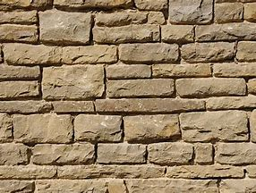

Siltstone: The Fine-Grained Sedimentary Rock
Chemical Formula: Variable (Quartz, Feldspar, Clay Minerals)
Color: Commonly brown, gray, red, yellow, or green
Hardness: 6-7 on the Mohs scale
Texture: Fine-grained, gritty
Formation: Compaction of silt-sized particles
Localities: United States, China, India, Australia, South Africa, Brazil
Common Uses: Construction, Decorative Stone, Aggregate, Fill Material
Siltstone is a sedimentary rock composed predominantly of silt-sized particles, which are finer than sand but coarser than clay. Formed through the gradual accumulation and compaction of silt in low-energy environments like lakes, deltas, and floodplains, siltstone is known for its fine-grained texture and often gritty feel. This rock bridges the gap between sandstone and shale, with particle sizes between 0.002 and 0.05 millimeters.
Siltstone is less common than sandstone and shale, but it is found worldwide in various geological formations. It is typically brown, gray, red, or green, with coloration depending on the mineral content. Despite its fine grains, siltstone is generally hard and durable, making it useful in construction and various industrial applications.
Formation and Types of Siltstone
Siltstone forms from the deposition and lithification of silt particles, typically in calm environments where fine sediments settle out of the water. Over time, these sediments are buried, compacted, and cemented together to form rock. The composition of siltstone can vary depending on the mineralogy of the original silt and the geological conditions during deposition and lithification.
Key Types of Siltstone:
1. Marine Siltstone

Marine siltstones form in shallow seas, deltas, and tidal flats where silt accumulates over time. These rocks often contain fossils of marine life and may exhibit subtle layering or lamination from the periodic deposition of silt.
2. Non-Marine Siltstone

Non-marine siltstone is deposited in environments such as rivers, lakes, and floodplains. These siltstones are often associated with ancient river deltas or lake beds and may contain plant fossils or traces of ancient life. Non-marine siltstone is typically less fossiliferous than marine varieties.
3. Calcareous Siltstone

In some cases, siltstone contains significant amounts of calcium carbonate, which cements the silt particles together. Calcareous siltstone is often lighter in color and may react with acids due to its carbonate content.
4. Ferruginous Siltstone

When iron oxides are present in the siltstone, the rock takes on a reddish or yellowish hue. Ferruginous siltstone is often found in desert regions or areas with high iron content in the sediment.
Structure and Properties of Siltstone
Siltstone has several distinguishing properties that make it unique among sedimentary rocks:
- Fine-Grained Texture: Siltstone is defined by its grain size, with particles between 0.002 and 0.05 millimeters in diameter. The grains are too small to be seen individually without magnification, giving the rock a smooth yet gritty texture.
- Hardness: Siltstone typically has a hardness of 6-7 on the Mohs scale, making it more durable than shale but slightly less durable than sandstone. Its hardness varies depending on the degree of compaction and the type of cementing material present.
- Porosity: Siltstone is generally less porous than sandstone, with finer pores that can hold water or oil. However, its low permeability makes it less suitable as a reservoir rock for fluids.
- Lamination: Many siltstones display lamination or thin layers formed by the settling of silt particles in water. These layers can create visually appealing patterns and textures, particularly in polished or weathered surfaces.
- Durability: Siltstone is resistant to weathering, especially if it contains silica or other durable cementing agents. However, siltstones that are rich in clay minerals may be more susceptible to erosion and breakdown over time.
Uses of Siltstone
Siltstone has a variety of applications in construction and industry due to its availability and durability:
1. Construction
Siltstone is commonly used as a building material for walls, foundations, and pavements. Its hardness and fine-grained texture make it suitable for cut stone in construction projects, especially for exterior applications where resistance to weathering is important. It is also used as dimension stone, where it can be cut into blocks or slabs for architectural purposes.
2. Decorative Stone
Polished siltstone is sometimes used as a decorative stone in interior and exterior design. Its fine grains and subtle color variations make it an attractive choice for wall cladding, floor tiles, and facades. Some varieties of siltstone have appealing lamination patterns that enhance their aesthetic value.
3. Aggregate and Fill Material
Crushed siltstone is used as aggregate in road construction, concrete, and other civil engineering projects. Its fine-grained nature makes it ideal as a fill material in landscaping and construction, particularly where a stable, compact foundation is needed.
4. Soil Improvement
In some cases, finely crushed siltstone is used in agriculture or land reclamation projects to improve soil texture and drainage. The addition of siltstone can help aerate compacted soils and improve water infiltration in heavy clay soils.
History of Siltstone
Human civilizations have used siltstone for millennia, though it has played a less prominent role than sandstone or limestone. Its fine-grained texture made it useful in certain construction applications, and its abundance in river valleys and floodplains has made it a common building material in ancient settlements.
Early Civilizations
In ancient times, siltstone was used by civilizations that settled near rivers and lakes, where silt deposits were common. Early builders used siltstone for foundations, walls, and paving stones in regions such as Mesopotamia, the Nile River Valley, and the Indus Valley.
Industrial Revolution
During the Industrial Revolution, siltstone became more widely used in construction and infrastructure projects. Its fine grains made it suitable for use as aggregate in road building and as a durable material for walls and floors. The increasing demand for strong, weather-resistant materials made siltstone a valuable resource in industrialized regions.
Modern Applications
Today, siltstone continues to be used in construction, particularly for building facades, flooring, and decorative elements. Its availability and ease of working make it a cost-effective alternative to more expensive building stones like marble or granite. In some regions, siltstone is also used for road bases and railway ballast.
Famous Varieties of Siltstone
1. The Old Red Sandstone

The Old Red Sandstone is a famous geological formation found in parts of the United Kingdom and Ireland. Though primarily composed of sandstone, this formation also includes layers of siltstone that were deposited in river and floodplain environments during the Devonian period. These siltstones are often red or brown due to iron oxide content.
2. Green River Formation Siltstone

The Green River Formation in the western United States is known for its well-preserved fossils, including those found in siltstone layers. These rocks were deposited in ancient lake environments and provide valuable insights into the ecosystems of the Eocene Epoch. Paleontologists prize the fine-grained siltstones of the Green River Formation for their fossil content.
3. Hawkesbury Siltstone

Found in Australia, Hawkesbury siltstone is part of the Hawkesbury Sandstone formation and is known for its distinctive gray and brown coloration. It has been used extensively in construction projects in the Sydney region, particularly in building facades and retaining walls.
Quarrying and Sourcing of Siltstone
Siltstone is commonly quarried from sedimentary rock formations that were once ancient lakes, rivers, or deltas. These deposits can be found in various regions around the world, and the rock is typically extracted using traditional quarrying methods.
Notable Quarry Locations:
- United States: Siltstone is quarried in many states, particularly in the Midwest and western regions where ancient lake and river deposits are prevalent.
- Australia: The Hawkesbury Siltstone is quarried near Sydney and used in construction projects throughout the region.
- United Kingdom: Siltstone, along with sandstone, is quarried in parts of Scotland and Wales, where it has been used in historic buildings and infrastructure.
Extraction Process
The quarrying of siltstone typically involves drilling and blasting to extract large blocks from sedimentary beds. These blocks are then cut and shaped into slabs, tiles, or other desired forms for use in construction. In some cases, siltstone is crushed for use as aggregate or fill material.
Enhancement of Siltstone
- Polishing: Siltstone used in decorative applications is often polished to create a smooth, glossy surface that highlights its color and texture. Polished siltstone is used for flooring, countertops, and interior walls.
- Sealing: Siltstone can be porous, and sealing it with a protective coat can help prevent staining or water infiltration. This treatment is particularly important for outdoor or high-traffic areas.
- Cutting and Shaping: Siltstone is often cut into blocks, slabs, or tiles for use in construction and design. Its fine grains allow for precise cuts, making it easy to work with for architectural elements.
Caring for Siltstone
Proper care and maintenance can help preserve the appearance and durability of siltstone:
- Cleaning: Siltstone surfaces can be cleaned with mild pH-neutral cleaners. Avoid using acidic or abrasive cleaners, which can damage the surface over time.
- Sealing: Sealing is recommended for siltstone used in outdoor applications or high-moisture environments. This prevents water damage and staining.
- Polishing: If the siltstone surface becomes dull or scratched, it can be polished to restore its shine. Professional polishing is recommended for larger areas or heavily used surfaces.
Environmental Considerations
The extraction of siltstone, like other natural stones, can have environmental impacts, including landscape disruption and energy consumption during quarrying and processing. However, sustainable quarrying practices are increasingly being adopted to reduce the environmental footprint of stone extraction. Reclamation efforts and waste minimization are key components of environmentally responsible quarrying.
Siltstone’s durability also contributes to its environmental benefits, as it requires minimal replacement or maintenance over time compared to other building materials. Its natural availability makes it a resource that can be used in a wide range of applications with minimal environmental harm.